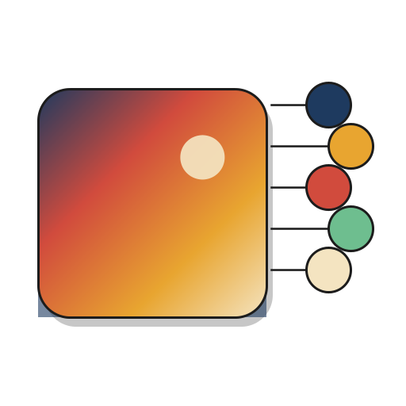

ColorExtractor.Net
Extract the most visually significant colors from an image — the way a human would. A cross-platform .NET port of thephpleague/color-extractor.


Install
dotnet add package ColorExtractor.Net
Quick start
using ColorExtractor.Net; // 1. Load a palette from an image var palette = Palette.FromFilename("photo.jpg"); // 2. Extract the top 5 visually distinct colors var extractor = new ColorExtractor(palette); int[] colors = extractor.Extract(5); // 3. Use them foreach (var color in colors) Console.WriteLine(Color.FromIntToHex(color)); // → #F3ED98, #E6614A, #A4C6D8, #3A3E4D, #CBA37A
Why ColorExtractor.Net?
Perceptual, not numeric
Colors are ranked in CIE Lab space and merged using CIEDE2000 delta-E — not naive RGB distance.
Cross-platform, managed
No native libgd. Pure .NET via SixLabors.ImageSharp: PNG, JPEG, GIF, WebP, BMP, TGA.
Faithful to the reference
Byte-for-byte output parity with the PHP library on lossless formats, including transparency blending.
Multi-target
.NET 8, 9, and 10. Single NuGet package, deterministic builds, SourceLink, symbol package included.